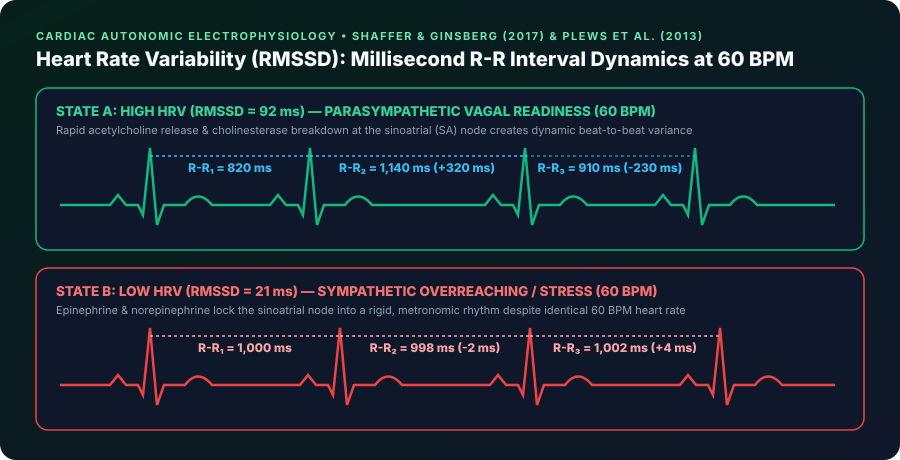

Why a Healthy Heart Does Not Beat Like a Metronome
If your resting heart rate is 60 beats per minute (bpm), it is tempting to assume your heart beats exactly once every 1.000 second like a quartz clock. In reality, a healthy human heart never beats with robotic regularity.
One beat might occur after 0.88 seconds (880 ms), the next after 1.12 seconds (1,120 ms), and the next after 0.95 seconds (950 ms). Heart Rate Variability (HRV) measures that microscopic millisecond variation between consecutive heartbeats (known clinically as R-R intervals or inter-beat intervals).
Paradoxically, while you want a low Resting Heart Rate, you want a high Heart Rate Variability:
- Low HRV (Metronome-like beats): Means your Sympathetic Nervous System ("Fight-or-Flight") is dominating, locking your heart into a rigid rhythm to deal with stress, fatigue, dehydration, or inflammation.
- High HRV (Flexible, variable beats): Means your Parasympathetic Nervous System ("Rest-and-Digest") is thriving via the Vagus Nerve, dynamically adjusting your heart rate with every breath and signaling that your body is recovered and adaptable.

How Wearables Calculate HRV: What Is RMSSD?
When you look at your morning HRV number on WHOOP, Oura Ring, Garmin HRV Status, or Fitbit (measured in milliseconds, ms), you are looking at a specific time-domain metric recommended by sports physiologists (Shaffer & Ginsberg, 2017; Plews et al., 2013): RMSSD (Root Mean Square of Successive Differences).
Here is how your watch computes RMSSD in three simple steps during deep, still sleep:
1. Measure Beat-to-Beat Gaps: Your optical sensor measures the exact time in milliseconds (ms) between each heartbeat (R-R interval).
2. Calculate Successive Differences: It subtracts each beat's interval from the very next beat's interval (e.g., 1,050 ms − 980 ms = +70 ms).
3. Square, Average & Take the Square Root: By squaring those beat-to-beat differences, averaging them across 5-minute sleep windows, and taking the square root, RMSSD isolates pure high-frequency Vagus Nerve (parasympathetic) activity linked to your breathing cycle (Respiratory Sinus Arrhythmia).
How Different Brands Sample Your Overnight HRV:
- Oura Ring & Garmin (Firstbeat): Calculate the full-night average RMSSD across all 5-minute sleep windows from sleep onset to wake-up, producing a rock-solid, highly repeatable baseline.
- WHOOP: Applies a dynamic weighted average skewed toward your last slow-wave (Deep) sleep phase before waking, when parasympathetic restoration peaks and early-night digestion noise has cleared.
- Apple Watch: Samples discrete SDNN readings intermittently throughout the day and night (unless AFib History is enabled for higher-frequency sampling).
Why You Should Never Compare Your HRV to a Friend's
One of the biggest surprises for wearable users is discovering that an elite marathoner might have an average HRV of 55 ms, while a recreational gym-goer of the same age has an average HRV of 110 ms.
As Garmin, Oura, and WHOOP physiology teams emphasize, HRV is a deeply individualized metric shaped by genetics, cardiac anatomy, age, sex, and hormone levels. While population data shows an age-related decline, only changes relative to your own 30-day rolling baseline carry actionable meaning:
| Age Group | Typical Middle 50% RMSSD Range | Typical 10th – 90th Percentile | How to Interpret Your Personal Baseline |
|---|---|---|---|
| 20 – 29 Years | 55 – 105 ms | 35 – 145 ms | High baseline variability; watch for sharp single-night drops after alcohol or late nights. |
| 30 – 39 Years | 42 – 82 ms | 28 – 115 ms | Sensitive barometer of career stress, parenting sleep fragmentation, and training load. |
| 40 – 49 Years | 32 – 65 ms | 22 – 92 ms | Consistently responds to Zone 2 aerobic conditioning and evening wind-down habits. |
| 50 – 59 Years | 25 – 52 ms | 18 – 75 ms | Focus on multi-day rolling averages (7-day HRV trend) rather than daily noise. |
| 60+ Years | 20 – 45 ms | 15 – 65 ms | Even a +5 ms upward shift in your 30-day average reflects meaningful cardiovascular resilience. |

Real-World Wearable Insights: "Why Did My HRV Drop Last Night?"
Your overnight HRV is an early-warning radar for hidden physiological stress. Here are the four most common reasons your morning HRV drops below your baseline corridor:
- Alcohol (The #1 Acute HRV Suppressor): In WHOOP and Oura member datasets across millions of nights, alcohol causes the most dramatic single-night HRV crash of any behavior. Just 1 to 2 evening drinks suppresses overnight HRV by 10% to 22%, while 3+ drinks can slash HRV by 30% to 50% and keep it suppressed for up to 72 hours.
- Incubating Illness (48 Hours Before Symptoms): Often, your HRV will drop 20% to 35% below baseline (accompanied by a
+4 to +8 bpmspike in Resting Heart Rate and+0.4°Cskin temperature) 1 to 2 days before you feel a sore throat or fever. Your immune system's inflammatory response activates the sympathetic nervous system long before conscious symptoms appear. - Accumulated Training Load & Dehydration: After a heavy leg day, long run, or hot training session, plasma blood volume drops and microscopic muscle inflammation rises—temporarily lowering HRV for 24–48 hours while your body repairs tissue.
- Late Meals & Psychological Work Stress: Eating within 2 hours of sleep or going to bed after an argument or late-night work sprint keeps cortisol elevated, preventing the vagus nerve from taking over during early sleep cycles.
How to Use Your 7-Day HRV Trend to Guide Training & Life
In a landmark sports science study of elite endurance athletes (Plews et al., 2013), researchers proved that HRV-guided training—adjusting daily workout intensity based on a 7-day rolling RMSSD average (HRV_7d) rather than rigidly following a calendar—produced superior VO2 Max and race performance with less overtraining:
- 🟢 HRV Within or Above Your 30-Day Baseline (Green Readiness): Your autonomic nervous system is balanced and adaptable. Ideal day for HIIT, heavy strength training, tempo runs, or high-stakes cognitive work.
- 🟡 HRV 10%–20% Below Baseline for 1–2 Days (Yellow Caution): Normal acute recovery response after a hard workout or poor night's sleep. Train at moderate intensity (Zone 2 cardio or technique work), hydrate with electrolytes, and prioritize an early bedtime.
- 🔴 7-Day Rolling HRV Trend Drops Below Your Normal Corridor (Red Recovery): Indicates cumulative sympathetic strain, under-recovery, or oncoming illness. Take a rest day, do 10 minutes of slow resonance breathing (6 breaths/minute), and focus on sleep and nutrition until your 7-day trend rebounds.
References & Clinical Sources
- Shaffer, F., & Ginsberg, J. P. (2017). An Overview of Heart Rate Variability Metrics and Norms. Frontiers in Public Health, 5, 258. Read on PubMed / NIH ↗
- Plews, D. J., Laursen, P. B., Stanley, J., Buchheit, M., & Kilding, A. E. (2013). Training adaptation and heart rate variability in elite endurance athletes: opening the door to effective monitoring. Sports Medicine, 43(9), 773–781. Read on PubMed / NIH ↗
- Oura Ring Pulse Blog. What Is Heart Rate Variability (HRV)? The Definitive Guide. Read on Oura Ring ↗
- Garmin Health Science. Heart Rate Variability (HRV) Status & Autonomic Recovery. Read on Garmin Health Science ↗